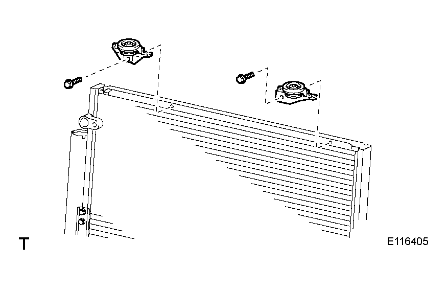
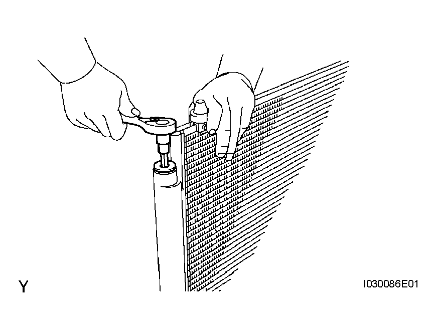
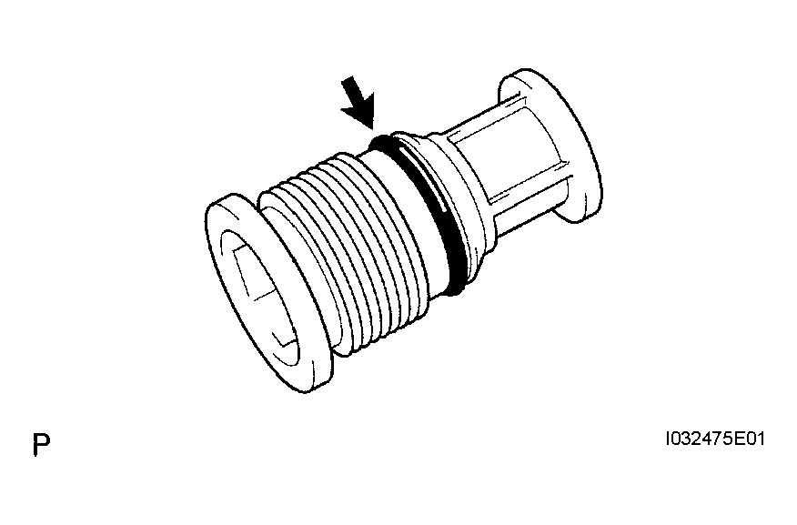
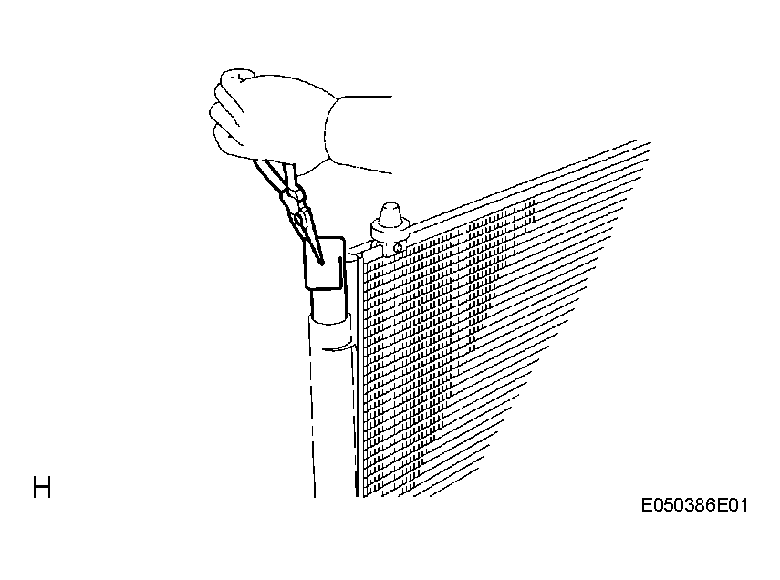

Air Conditioning: Condenser: Disassembly
- REMOVE NO. 1 CONDENSER BRACKET COLLAR
- Remove the 2 bolts and 2 condenser bracket collars.

Courtesy of © TOYOTA, LICENSE AGREEMENT TMS1002
- REMOVE COOLER DRYER
- Using a 14 mm socket hexagon wrench, remove the cap from the modulator.

Courtesy of © TOYOTA, LICENSE AGREEMENT TMS1002
- Remove the O-ring from the cap.

Courtesy of © TOYOTA, LICENSE AGREEMENT TMS1002
- Using pliers, remove the cooler dryer.

Courtesy of © TOYOTA, LICENSE AGREEMENT TMS1002